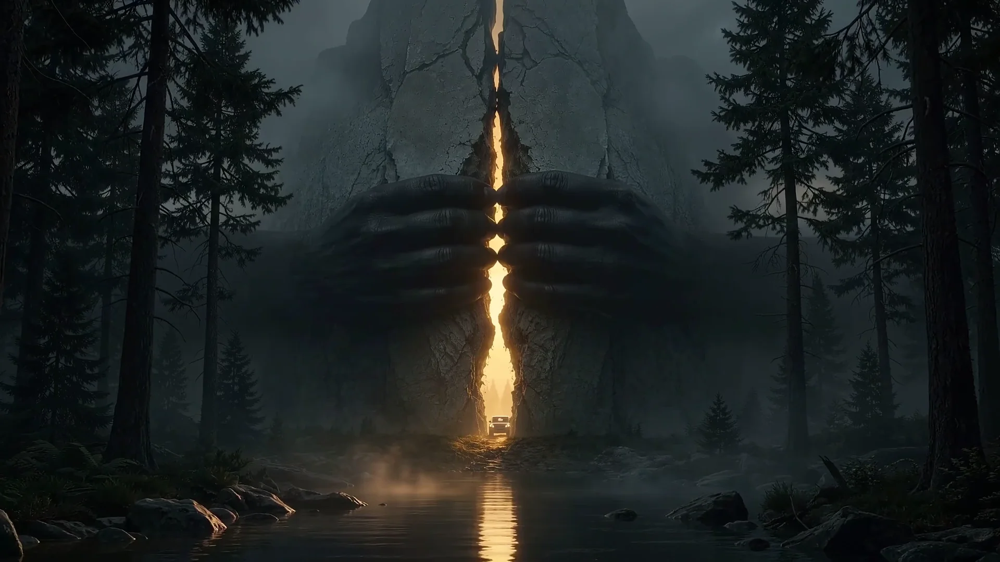

Born from the bedrock of an untamed continent.
Where others calculate failure rates, Innoson reinforces the steel. Built to withstand conditions that break ordinary machines.
Then somebody else is hired to keep them alive.
Tough terrain is not an option; it is the standard environment. Heavy-duty suspension, armored chassis geometry, and unrelenting torque.
From the raw wilderness to the commanding avenue.
The transition from primordial rock to rain-slicked boulevard is seamless. Sovereign road presence designed for leaders.
Innoson. Built for the unstoppable.
Engineered in Nigeria. Proven across the continent. Delivering total authority wherever the journey leads.
The Road Does Not Negotiate.
Neither Does Innoson.
Experience Africa's definitive statement in automotive craftsmanship. Schedule a private demonstration or commission fleet manufacturing.